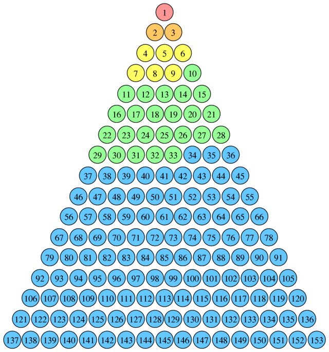

Defining 153
939 words long.
Published on 2024-03-30

The 17th Triangular Number
Scholars going back at least as far as Augustine have noted that 153 is a triangular number. It equals the sum of the first seventeen counting numbers.
153 = 1+2+3+4+5+6+7+8+9+10+11+12+13+14+15+16+17
This connects 153 to 17. It suggests that 153 has the same meaning as 17, but carried to an extreme.
Seventeen means victory, a meaning many before me have accepted. Genesis 7:11 tells us that the flood of Noah began on the seventeenth day of the second month. That was the beginning of God’s victory over the wickedness of the antediluvian world. Then Genesis 8:4 tells us that the Ark came to rest on the seventeenth day of the seventh month. Thus the number seventeen is associated with both the start and end of the flood.
Duration of Noah’s flood
If you read the text straight, how many days long does it give the impression the flood lasted? Both Genesis 7:24 and 8:3 mention 150 days as the time until the waters abated. However, that is not how long it was until the ark came to rest! The flood lasted exactly five months. How long is that? (Important! My previous attempt to interpret Revelation 9 failed on this point. I was off by a single day…)
To answer definitively, we would need to know what calendrical system Noah used, but we don’t. We do not know whether his years began in spring or autumn. Others have observed that it could not have been a lunar calendar. Such a calendar has a mixture of months of lengths alternating between 29 and 30 days because the lunar cycle is 29.5 days long. Five lunar months would therefore be less than 150 days. Here is why that is wrong.
The start of the flood
In the six hundredth year of Noah's life,
in the second month,
on the seventeenth day of the month,
on that day all the fountains of the great deep burst forth,
and the windows of the heavens were opened.
- Genesis 7:11, ESV
The end of the flood
… and the waters receded from the earth continually.
At the end of 150 days the waters had abated,
and in the seventh month,
on the seventeenth day of the month,
the ark came to rest on the mountains of Ararat.
- Genesis 8:3-4, ESV
The waters began to abate on the 150th day, and on a later day, the 17th day of the 7th month, the Ark came to rest. That day was exactly five months after the start of the flood. Thus the flood lasted for more than 150 days, but how many?
The best we can do is use a modern calendar and try every possible pair of start and end months. If we do that, then we get these numbers of occurrences for each length:
- 150 days (one occurrence, starting in February)
- 151 days (four, starting in Jan, Oct, Nov or Dec)
- 153 days (seven, starting in Mar, Apr, May, June, July, Aug or Sep)
- Note that 152 days is not a possibility! That is why using “average” month lengths to interpret the five months of the locusts in Revelation 9 yielded a wrong answer.
Since the Ark came to rest after the waters began to abate and the abatement started on the 150th day, that rules out possibility one. The likelihood that the duration was 153 days is therefore 7/11 or 63%. The start months that yield that result are March, April, May, June, July, August, and September. Those who propose theological reasons for a start month often give March, April or September as likely start months, to line up with Passover or a Jewish Fall festival. Thus on symbolic, theological grounds, 153 days is the best choice.
With the flood lasting 153 days, we have found in Genesis 7 & 8 the text that defines the number’s meaning. This result we can use to better understand John 21. It is not an obscure passage that counts obscure things. It is the duration of one of the greatest works of God. This passage also connects the number seventeen to 153 in more than an unspiritual, mathematical way, as the next page in this series shows...
Links to the other articles in this section:
- Connections to other books The scope of inquiry is given. The riddle is connected to Genesis, Psalms 34 and 119, Jeremiah 32, Habakkuk, John 21, Matthew 13, and Revelation 9.
- Defining 153 Noah's Flood is shown to have lasted precisely 153 days.
- Fear 153 is connected to the Fear of the Lord through Psalms 24 and 119, Luke 12 and 2 Kings 17.
- Hope Jeremiah connects a related victory number, seventeen (17), to hope. Then the themes of John 21 are connected to Habakkuk.
- Habakkuk: Part 1 Analysis of Habakkuk 1:1-4. Habakkuk puts questions to God.
- Habakkuk: Part 2 Analysis of Habakkuk 1:5-11. God doubles down: the bitter and hasty Chaldeans are coming.
- Habakkuk: Part 3 Analysis of Habakkuk 1:12-2:1. Habakkuk complains with three threes about innocent people caught in a cruel net.
- Habakkuk: Part 4 Analysis of Habakkuk 2:2-5. God offers a fourfold assurance to the faithful.
- Habakkuk: Part 5 Analysis of Habakkuk 2:6-20. Five woes are pronounced against lawbreakers.
- Habakkuk: Part 6 Analysis of Habakkuk 3:1-16. Prophecy of God's coming six-ply war against the wicked.
- Habakkuk: Part 7 Analysis of Habakkuk 3:17-19. Six laments over a barren harvest and a seventh praise of God in faith.
- The Fifth Trumpet of Revelation The Revelation 9 Plague of Locusts lasts 153 Years.
- Habakkuk's War Revisits the sixth section of Habakkuk with a final insight into God's battle plan.